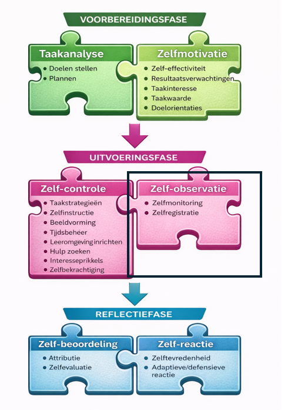
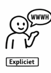
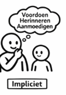
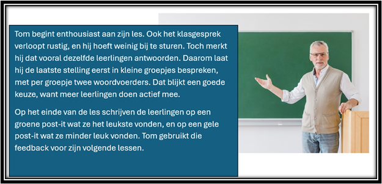
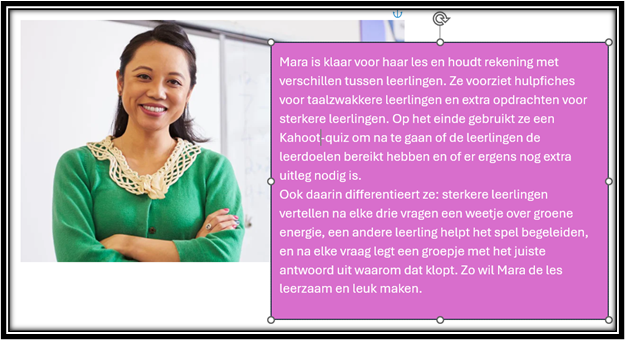
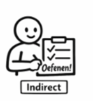
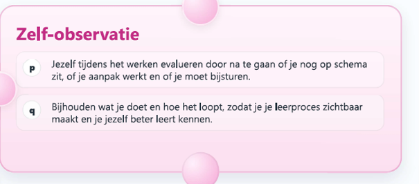
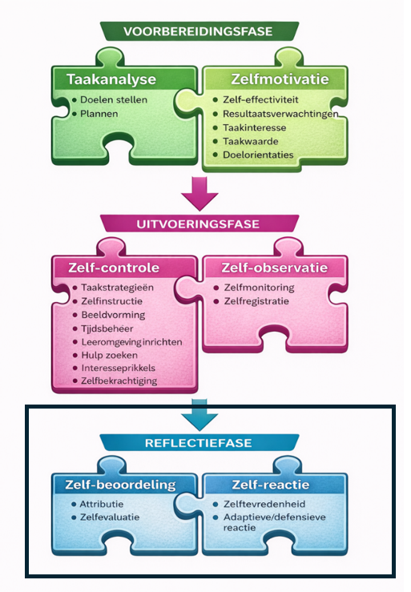
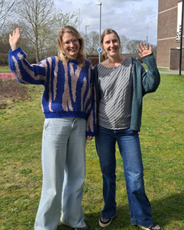

WEEK 3 – TIJDENS HET LEREN
Uitvoeringsfase: Zelf-observatie
⏱ Totale tijd: max. 60 minuten
Deze week zoomen we in op Zelf-observatie: jezelf bijsturen tijdens het leren, terwijl je bezig bent dus.
1. Even terugblikken – Hoe gaat het?

Vorige week:
- Dachten we na over hoe we aan de slag gaan richting ons doel (taakstrategieën, beeldvorming),
- Welke praktische organisatie daarvoor nodig is (leeromgeving, hulp vragen, tijdsbeheer),
- En hoe we onszelf fris, monter en gemotiveerd houden (zelfinstructies, zelfbekrachtiging, interesse blijven prikkelen)
De randvoorwaarden om ons doel te bereiken hebben we dus scherp gezet.
Sta even stil bij volgende vragen:
- Wat heeft je geholpen om een stapje vooruit te zetten?
- Wat lukte?
- Waar liep je vast?
- Hoe zit het met je motivatie vandaag? Moet je even bijtanken of niet? Schakel gerust je buddy als klankbord in, of stuur een mailtje.
2. Korte herhaling
Vorige week zoomden we in op een aantal ZRL-vaardigheden onder de rubriek zelf-controle. We controleerden of brachten in kaart hoe we ons praktisch organiseren, welke aanpak we zullen hanteren en bovendien hoe we onszelf gemotiveerd houden. Heel wat om onder controle te houden!
We herhalen deze vaardigheden door middel van een oefening (remember: actieve verwerking). Hierbij maken we al even kort de transfer naar onze leerlingen.
Hoe vertaal je deze 7 ZRL vaardigheden nu naar je leerlingen en hoe ondersteun je hen expliciet (WWWH), impliciet (modelleren, aanmoedigen, prompten,…) of indirect (oefenen!) in deze vaardigheden?
Koppel onderstaande situaties aan de juiste ZRL-vaardigheid uit week 2. Noteer en check daarna je antwoorden.
Opgelet: er zijn soms meerdere antwoorden mogelijk.
- Een leerling maakt een mindmap van de thema’s die aan bod komen op de toets, inclusief kleine icoontjes, en studeert deze eerst.
- Een leerling fluistert “en nu eerst deze optellen, en dan…”
- Een leerling wisselt studeren en taken maken af als de concentratie op is.
- Een leerling duidt aan hoeveel tijd hij zal per deelstap van zijn planning voorziet.
- Een leerling leest en herleest de leerstof telkens opnieuw.
- Een leerling gebruikt oordoppen tijdens zelfstandig werk.
- Een leerling beloont zichzelf na een moeilijke taak.
- Een leerling stelt elke 3 minuten een vraag.
- A Tijdsbeheer
- B Leeromgeving inrichten
- C Gepast hulp zoeken
- D Taakstrategieën
- E Beeldvorming
- F Zelfinstructie
- G Interesseprikkels
- H Zelfbekrachtiging
Oplossingen
- 1. D en E. Een mindmap maken is enerzijds actief verwerken (een effectieve taakstrategie) en anderzijds aan beeldvorming doen.
- 2. F. Deze leerling doet aan zelfinstructie en spreekt tegen zichzelf. Door het luidop te doen houdt het kind zichzelf bij de les.
- 3. G. Deze leerling gaat zijn interesse terug prikkelen door af te wisselen in taken. Indien hij dit op voorhand zo inplant doet hij aan goed tijdsbeheer, door niet te lang aan één zelfde taak te werken.
- 4. A. Deze leerling doet aan tijdsbeheer en schat de nodige tijd in.
- 5. D. Dit is een ineffectieve taakstrategie.
- 6. B. Deze leerling zorgt voor een goede leeromgeving met zo min mogelijke afleiding.
- 7. H. De leerling bekrachtigt zichzelf voor goed werk.
- 8. C. Hier gaat het over hulp vragen. Deze leerling vraagt te snel hulp. Het zal aan de leerkracht zijn om uit te zoeken of er meer ondersteuning nodig is om gestart te raken (denk aan hulpfiches) of eerder meer vertrouwen uitspreken en dus in te spelen op de competentiegevoelens.
Wist-je-dat (nog)- je? Herhaling is uiteraard een goed didactisch principe, en al zeker als het gaat over gespreid herhaling en het actief verwerken van de reeds geleerde kennis.
3. Vooruitkijken – Opzet van deze week

Wat komt er deze week aan bod?
Griet en Nathalie heten je terug welkom en nemen je mee in het opzet van de week.
Klik hier om het filmpje te bekijken (2,5 minuut)
Deze week zoomen we in op Zelf-observatie: jezelf bijsturen tijdens het leren, terwijl je bezig bent dus.
De vragen daarbij zijn:
- Ben ik nog goed bezig?
- Ligt mijn doel nog binnen bereik?
- Moet ik bijsturen?
Welkom bij zelf-observatie.
4. Zelf-observatie: Zelfmonitoring
Zelf-observatie bestaat uit twee vaardigheden, zelfmonitoring en zelfregistratie
A. De theorie

We staan expliciet stil bij wat zelfmonitoring betekent, aan de hand van de WWWH.
WAT?
Zelfmonitoring is jezelf evalueren TIJDENS het werken:
- Ben ik nog op schema?
- Werkt mijn aanpak?
- Ben ik kwaliteitsvol bezig?
- Moet ik iets aanpassen?
Je kijkt dus niet pas op het einde terug, je stuurt bij onderweg.
WAAROM?
Omdat wachten tot het einde vaak te laat is. Zelfmonitoring voorkomt tijdverlies op een verkeerde weg.
WANNEER?
Tijdens het leerproces. Je zoomt regelmatig even uit.
HOE?
- Je planning bekijken: zit ik op schema?
- Je doelen en succescriteria checken: kom ik dichterbij?
- Je energie inschatten: ben ik nog fris?
- Je strategie evalueren: werkt dit?
B. Een voorbeeld

Tom en Mara
Hebben jullie Tom en Mara al gemist? Wel zij zijn net als jullie ook nog steeds goed bezig. Hun geplande nieuwe les over klimaatverandering is uitgewerkt en zal morgen voor het eerst gegeven worden. Spannend! Maar hoe weten ze nu of ze goed bezig zijn? Hoe kunnen ze zowel tijdens de les bijsturen, als na de les.
Lees hoe ze het beiden aanpakken. Denk na over de voor-en nadelen van elke aanpak.
In wie herken jij je, Tom of Mara? En in wie herken jij jouw buddy?


Benieuwd wat wij vinden van de ZRL vaardigheden van Tom en Mara.
Klik op de micro en hoor onze reflecties (6 minuten). Wandel even rond terwijl je luistert, dat bevordert de concentratie en laat je hersenen op volle toeren draaien.
Klik hier om onze reflecties te beluisteren
C. Aan de slag

Aan de slag met je leerdagboek
Tijd om te kijken hoe jij jezelf monitort en bijstuurt in functie van jouw doel. Betrek je daarvoor leerlingen, collega’s? Gebruik je (formatieve)evaluaties of observaties van je leerlingen? …
5. Zelf-observatie: Zelfregistratie
A. De theorie
Wat bedoelt men met zelfregistratie en hoe hangt het samen met zelfmonitoring. We bekijken het eerst terug expliciet, daarna zoomen we in op een voorbeeld en gaan we zelf aan de slag.
WAT?
Zelfregistratie is bijhouden wat je doet en hoe het loopt.
Registreren = zichtbaar maken.
Bijvoorbeeld:
- Hoe lang deed ik over deze taak?
- Hoe vaak werd ik afgeleid?
- Moest ik herplannen?
- Wanneer werkte ik het meest geconcentreerd?
WAAROM?
Je leert jezelf kennen. En zonder zelfkennis kan je niet gericht bijsturen.
WANNEER?
Ook tijdens het leerproces.
HOE?
- Checklist
- Tijdsregistratie
- Reflectielijst
- Notities in je leerdagboek
B. Een voorbeeld
Doen Griet en Nathalie aan zelfregistratie?
Zelfregistratie of bijhouden, meten of in kaart brengen hoe je bezig bent klinkt nogal bureaucratisch. Wij dachten even na hoe wij dat zelf doen, in het dagelijks leven.
In co-regulatie kunnen we immers veel van elkaar leren, ook wij! We interviewden elkaar over onze eigen zelfregistratie.
Klik op de knop naast de foto om onze self made video te bekijken.
Deze video duurt terug een kleine 6 minuten. Wandel dus gerust rond terwijl je kijkt en luistert.

Wist-je-dat- (nog)-je: Co-regulatie wil zeggen dat leerlingen, leerkrachten en medeleerlingen continu elkaars leerproces reguleren. Je leert nooit los van de omgeving maar van en met elkaar (Last, 2025). Griet en Nathalie werken samen in dit project en co-reguleren hierbij elkaars leerproces.
Wist- je-dat (nog)-je: De ZRL-cyclus en vaardigheden – dus ook monitoring en registratie - zijn steeds in functie van het bereiken van je doel. Zorg ervoor dat je het doel dus niet uit het oog verliest!
C. Aan de slag
Aan de slag met je leerdagboek
Wat neem je jezelf concreet voor qua registratie? Wees specifiek.

Neem je leerdagboek er opnieuw bij en noteer je inzichten.
6. Uitsmijters (optioneel)
Graag nog eens de ZRL-vaardigheden op een rijtje ? Probeer de juiste ZRL-vaardigheid op de juiste zin te kleven. Scroll terug om jezelf te corrigeren.

Zelfmonitoring en zelfregistreren van je leren als leerkracht doet al snel denken aan het verzamelen van data over je leerlingen, omdat deze je kunnen vertellen of je iets moet aanpassen in je aanpak van je les, je cursus, je werkvormen.
Eén manier om data te verzamelen is door middel van formatief toetsen, waarbij je zelf zicht krijgt op wat je leerlingen als groep al goed en minder goed kennen, maar ook door middel van observeren kan je heel wat leren.
Hieronder de link naar het materiaal van leerpunt rond observeren ifv formatieve evaluatie en feedback.
Wil je graag monitoren en registreren hoe je les verloopt en hoe je kan bijsturen? Dan is de kijkwijzer collegiale visitatie een aanrader. Geef je collega wel mee welk doel je voor ogen hebt: wil je meer differentiëren, groeien in klasmanagement, …
7. Vooruitblik
Voila, het zit er al weer op! Deze week zoomden we in op onderweg checken en bijsturen. Volgende week evalueren we wat we tot nog toe gedaan hebben, en zetten we alles al klaar voor een nieuwe cyclus.
Tot dan !

